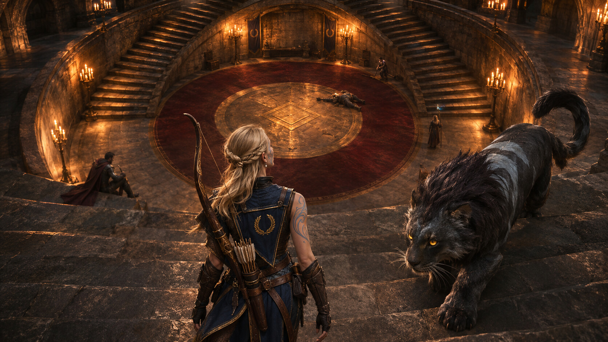

From Farholde to the Badlands
The Elk’s Horn was quiet enough before dawn that I could hear Sylthara come down the stairs. On Zephras I used to listen for a change in the air before I put a foot outside. At Farholde I listened for the sea. The keep stands on an island chosen by knights who had rescued people in the First War and found the road home closed to them. I thought about that as I gathered my things. Building a place to stay must have felt very different when the choice was made for you.
We started close to the keep. Sylthara took several Harvest Sentries, going in under their wide swings when she could and taking a few hard blows when she couldn’t. There’s a peculiar sound when claws strike something that feels neither fear nor pain. She learned to get her weight out of the way quicker than I learned to leave her room to do it. I had the rest of yesterday’s work on my mind. She had the next swing in hers.
I went through Old Town in Stormwind and took my artisan skinning instruction before getting back to the Badlands. Talessah Southtotem stopped long enough to give Sylthara a gentle pat. Then it was back to the cracked ground at Agmond’s End and the Dustbelchers. I needed three scraps of a scroll for Theldurin the Lost. The torn piece came first. A Dazzling Longsword turned up before the singed piece, which made for a fine bit of news to send to the guild and did very little to put the scroll back together.
A Dustbelcher shaman killed me while I still had two pieces. I remember how little cover there was once I’d let the fight get away from me. A boulder that looks sufficient from fifty paces can have remarkably little to offer when you’re right up against it. I went back and found the crumpled piece. By the time I laid all three in front of Theldurin, I was ready to hear that our part in this business was done. Instead, he gave me the means to call Myzrael to the surface and told me to defeat her.
Two summons at the Shards
Poje Hammerstar had asked earlier whether I’d finished the quest. He told me to ask when I got to the last step, so I did. He came by boat and then by gryphon. While he was in the air we were already trying to find someone who could heal. There were enough people in the Highlands to make me think somebody would want to come. Poje reached me before anybody else did, and the two of us decided to try.
I read the scroll. Myzrael knew my name.
“What? Aelindra, you served me well, but…”
She wanted to know why I had called her before she reached her full power. Then she called me a fool for helping her. I had spent the better part of the morning bringing Theldurin the pieces that would put her within reach, and the work I’d done before that had helped her get as far as she had. It took hearing her say it herself for me to understand how readily I’d accepted the part she gave me in her story.
Poje and I had Myzrael to deal with and Prismatic Exiles coming in around us. When I turned toward one of the small ones, I lost sight of what Poje was facing. When I turned back, there was another at my feet. Poje fell a few heartbeats before I did. The journal gives a Prismatic Exile credit for my death. I believe it. I’d gone there thinking about where to stand when a giant rose. I should have thought about where I could move once the smaller things got between me and the open ground.
“Close,” Poje said afterward. He’d already spent one of the strongest things he could bring to the fight. My scroll was used up. We asked again for help and eventually had to call off the attempt. He had come a long way to spend less than two minutes fighting beside me. I was grateful he’d made the trip, and I wished I’d asked him to wait a little longer before I began reading.
Katrana Twilight checked back later. She still had her own Scroll of Myzrael and was willing to come from Kalimdor. She missed the boat and caught another. Stray Wulf heard us looking for help in the guild and said she could kill it. She was in the Highlands before Katrana’s crossing was done. I had time to look over the ground again with Sylthara beside me and tell them what I remembered of the Exiles.
When Katrana arrived, she brought out her voidwalker and made healthstones. I was glad to stand and wait while she got herself ready. Myzrael spoke Katrana’s name this time. Stray slipped in close and stunned her as the fight opened, and Katrana followed with fire. Sylthara went straight to work. The Exiles caught her in frost and shocked her when she struck them. Myzrael shook the ground under her paws. The cat got moving again whenever there was room, bit into the princess, and turned on the Exiles when they crowded in.
Less than a minute after the summoning, Myzrael was down. There were still Exiles to finish. I watched Sylthara until she had come clear of them before allowing myself to look back at the Shards. Katrana took the Eldritch Shackles, and I finished Summoning the Princess. Stray wished us a good day and went on her way. I had used the first scroll with two people standing there. By the time the second one worked, four guildmates, counting Poje and me, had put part of their morning into getting it done.
Around that stretch of the morning I had been trying a few words in Darnassian. “Fair winds to you,” I said. And, at last, “My true name is Aelindra Ser’jaen’thal.” Sarjeant is still the name I expect to hear when somebody calls me across a road. It felt good to say the other one aloud, too.
The man under the tree
At Refuge Pointe, the League of Arathor finally counted me as neutral. At Southshore I gave Loremaster Dibbs his recovered books, including the worn volume with The Arm of Gri’lek. I took his Tomes of Alterac to Milton Sheaf at the Royal Library in Stormwind after finishing Marshal Redpath’s bounty. Sylthara had waded into Crushridge brutes and ogres while I worked on gathering the knucklebones. Redpath had more to say about the warmongers. So did the people asking after the Dark Council. I had plenty to carry forward whenever I went back to the mountains.
By midday we were in the Riverglades again. Sylthara had purred and let Luna Leaf pet her earlier, which is about as much of an introduction as she ever gives. We carried Eleanor Holmsby’s parcel to Watcher Fredericks at Southern Watch. There was work waiting on gnolls and a snout somebody wanted brought back, and Foreman Halligan Turner needed crawfish shells, manure, and Mudfin heads for his planting. It was the sort of list you’re glad to get out of your bag before you sit down to eat.
Then I found Curly under a tree.
I went for help at Turner’s Logging Camp and came back with his brother Hurley. There was just enough of Curly free to see that he was alive. Hurley told him to stay still while he cut him out, then added that with luck he would still have his feet. He had barely begun before Curly called out about the crocs. When a second wave came, Hurley still had work to do at the trunk. I kept the way to the tree as clear as I could. A man swinging an axe that close to his brother’s legs ought to be able to look at what he’s doing.
At last Hurley told Curly to see if he could get out. “Thought I was a goner for sure,” Curly said. Hurley stayed with him and sent me back to tell Foreman Turner. Turner gave me Hurley’s Felling Axe. My journal marks that moment as the one when I reached level thirty-nine. I remember looking down at my hands. They had drawn a bow underground and held on to ledges high above the ground. Today I was pleased they had been useful to a man who wanted to stand up again.
I planted five saplings around the camp before leaving. Somebody there will have to keep the animals off those seedlings if they’re to amount to anything. I found myself hoping it would be Curly.
Twice through the Cathedral
Valyna Varrior invited me to Scarlet Monastery. Thorim Sunhammer, Dem Apples, and Salazar Omander made up the rest of the party. Valyna and Dem were looking for shoulders and a shield. Salazar wanted In the Name of the Light, which I had from Raleigh the Devout in Southshore. After yesterday’s trip through the Library, I still needed the Cathedral pair and Herod. We could walk through the same doors for quite different reasons and all have something worth doing in there.
We fought our way through the Cathedral and found High Inquisitor Fairbanks. Thorim had been giving Sylthara a little attention before we went in, and she put it out of her mind the instant there was work. Valyna met Fairbanks with her shield. Sylthara got in and stayed with him through the short fight. There was a moment over the Inquisitor’s Shawl when Thorim pretended he was going to claim it just for the look of it. I was glad to hear people joking in that chapel before we went farther.
Mograine took the floor first. The commander called us infidels, and Sylthara went in close enough to feel the punishment his aura sent back with each strike. When he fell, Whitemane came out and put the party to sleep. I remember the helplessness of having the bow in my hand and no shot I could take. Her voice carried plainly enough.
“Arise, my champion!”
I heard him answer her. Once I could move again there were two of them to watch. Sylthara tore into Whitemane and then went back to Mograine. Every time the cat struck the commander she had his light to deal with as well as his weapon. Whitemane fell first. Mograine was still standing after that, and there was more work to do before he stayed down.
We went out, let Valyna reset the place, and walked back in. The second time Fairbanks got a shield up. Sylthara kept at him regardless. Dem remembered they hadn’t done the dance and danced with Valyna as Mograine made his entrance. Later, Dem danced with Mograine himself. The commander had very little humor about it. He raised his shield, fell, and rose again at Whitemane’s call. This time, once she was down, we finished him quicker. Valyna took Mograine’s Might on the roll. The particular things the others had hoped to find could wait for another day. I thanked them as we parted. That was two passages through the Cathedral in the time it would have taken me and Sylthara to scout our way to the chapel by ourselves.
Sylthara in the Armory
Nymriel Moonclaw took the next party in. Nymriel offered to tank and asked us to show the way. Joy Skydancer knew the route and told us we’d work around the room and find the boss at the far end. Reila Wintersun came with us, and Valem Ironeye kept us on our feet. It was a new company and a different wing. I had to learn where everybody stood all over again.
We lost Sylthara to a Scarlet Guardsman. She’d got her teeth into him and was still clawing at him while his blows came down. There’s a space at my side that I know by feel now. When it went empty I looked for her before I looked for the next shot. I brought her back, and a few rooms later there was a better reason to look down. She’d grown stronger, too. Valem and Nymriel congratulated us. Sylthara gave every appearance of thinking the next guardsman would be a more appropriate celebration.
Near the end a defender caught Valem close and interrupted his healing. He apologized once we were clear. Nymriel told him we’d made it. I liked the brevity of that exchange. Everybody in the room had more to do than carry a grudge over a mistake we’d already lived through.
Herod waited in the Hall of Champions. He sounded pleased to have company. The hall gave me a shot from the steps, with the red floor spread out below and enough air overhead that I could raise the bow without thinking about the ceiling. The room felt entirely different to Sylthara. Herod’s axe swept round again and again. The first time, she was in reach. She took several blows from the spinning blade over the course of the fight, and a cleave besides. She still found time to bite him and rake him between turns.
When Herod called on the Light for strength, he was already wounded and his swings were coming harder. He went down with the cat still alive. Then the Scarlet trainees came shouting in to avenge him. We had to finish with them before we could stand at ease. I remember Sylthara on the stair beside me, her eyes catching the light from the hall. I’d already seen her fall once that afternoon. I could have looked at the shoulder piece everybody was rolling for. I kept looking at the cat.
The others meant to try the Cathedral next. I’d given its occupants two chances to make me stay, and I had the quest work I’d come for. I thanked Nymriel and the rest and went back to Southshore. Raleigh the Devout took my report. Later I sat for a while at the Lion’s Pride in Goldshire, where I spoke with Innkeeper Farley and Barkeep Dobbins and asked for another ale. For a little while I thought that might be enough day for anyone.
By the table
The Rebel Camp in Stranglethorn is a collection of men who once served under the officer they now have to fight. Lieutenant Doren’s people had broken with Colonel Kurzen and put the road between themselves and the expedition’s compound. They still had the colonel’s commandos and headshrinkers coming after them. I went down to help with those first.
Vissara Veilstrider invited me when I asked to group. There was enough cover for Kurzen’s commandos to come very close before I had a clean shot. With Vissara there I could keep an eye on one opening while she worked another. We fought commandos and headshrinkers together until she had what she needed. She wished me happy hunting and went her way. I still had a few to go. When I had them, Doren sent me after the colonel himself.
I asked Mid Life Aggro if anybody needed Kurzen. Sho Nuffthamasta answered with an invitation. Once we were on our way in I asked whether he knew what to do.
“kill”
It was a fair answer, and he made good on it. We went in together through the elites, witch doctors, subchiefs, and shadow hunters. The narrow parts were awkward for a bow. If I stayed too far behind I could lose sight of Sho, and if I went up too far there was no space to draw. Sylthara could pass a man in a place I’d have had to turn sideways. Watching where she went helped me get my bearings more than once.
Sol Vancrest tried to invite me while I was already with Sho. A little later Sol and Fabianis Darkwater both joined us. “Three guildies,” I said. I’d spent enough of the day waiting to see who could make it to the next fight that I was glad to be able to say it with the three of them already there.
We cleared a little more room and I asked whether this was where Kurzen would appear. Sol said yes. Fabianis told me where to watch.
“By the table”
That was all the warning the place needed. When Kurzen came, he had four of us and Sylthara to contend with. He fell, and all four of us took what we needed for proof. Sol thanked the group and headed on. Sho and Fabianis stayed while we finished the rest of the elites. I picked up a fighter’s uniform on the way out. Wendel Mathers needed a disguise and a key to get out of his cage, and that uniform would do him rather more good than it did the man who’d been wearing it.
I reported to Doren, helped Wendel, and took his errand back toward port. The compound was still there behind me. Doren’s people would have plenty of work left in the morning. But the colonel himself would never give another order, and the cook had a way out.
The last tablet
Late in the day I was among the Bloodscalps looking for supplies. Sun House invited me and asked what I was after. We were doing the same work. We checked a place that looked as if it ought to have supplies and found ourselves still one short apiece. We kept looking, killing scouts, hunters, and mystics as we went. When we were through, Sun thanked me for grouping and wished me luck. “I am in your debt,” I told him. It was the second time that day I’d said much the same thing to somebody, and I meant it both times.
I still owed Brother Nimetz the legends from four tablets. The last sent me deeper into Zul’Kunda, where the Bloodscalps hold the old stone city. Vines hang across the walks, and beyond one turn there’s room for an entire patrol you couldn’t see from the one before it. Sylthara and I had been all day in places where what lay around the next corner mattered. I was tired enough to forget that for a moment.
A scout killed me there. There were hunters and mystics in the ruins, a tiger in among them, and too little room left between me and the next threat. When I fell, Sylthara was already down. I’d spent much of the day looking for her dark shape against one sort of ground or another. For a little while there was only pale stone and the long way back to where we’d fallen.
We went back. I fought on through witch doctors, headhunters, and berserkers until I had the Fourth Troll Legend. At Rebel Camp I gave the legends to Nimetz. He still had questions about what had happened to Kurzen, and I took the work he called Troll Witchery. Then I flipped my hearthstone into the air, caught it, and let it take me to Southshore.
From the shore you can hear water working against the town even after the streets quiet down. People fleeing Stormwind once came ashore here in their thousands. I’d started the day in a keep built by people who couldn’t go home by the road they knew, and ended it in another place where strangers had once had to make room for each other. I thought again about Poje coming by boat and gryphon, and Katrana standing on a dock waiting for the next crossing. And I could still hear Fabianis in that cave, telling me to watch the table.
I set the bow aside. Sylthara settled close enough that I could hear her breathing. When a footstep passed outside, one of her ears turned. The rest of her stayed where it was. I took that as permission to do the same.